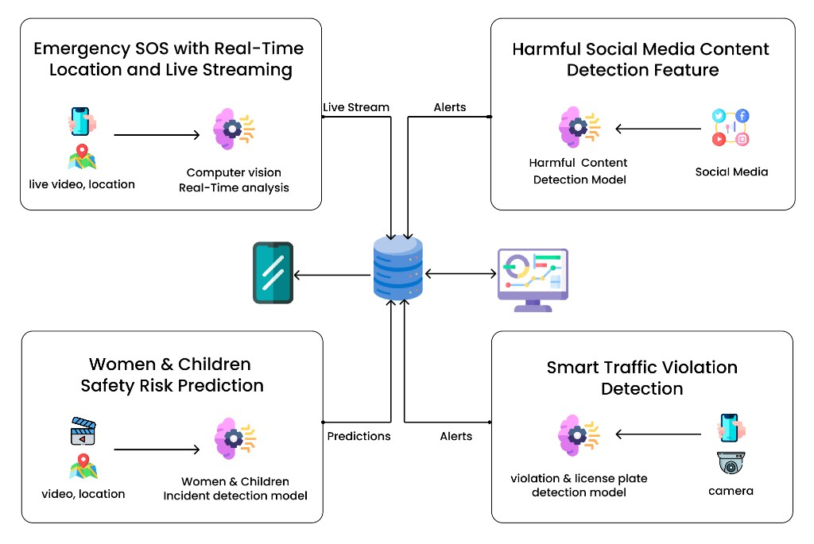

Enhancing Community Policing and Emergency Response in Sri Lanka
SafeLink is an integrated AI mobile platform designed to improve public safety through proactive risk prediction, emergency SOS support, harmful social media detection, and smart traffic violation analytics tailored to the Sri Lankan context.
SafeLink is a final-year research project focused on improving public safety and community policing in Sri Lanka using artificial intelligence. The system integrates computer vision, multilingual natural language processing, audio analysis, and predictive analytics in a single mobile-first platform.
Unlike traditional reactive safety mechanisms, SafeLink supports early risk identification and faster response. It combines women and children risk mapping, SOS live evidence streaming, harmful online content moderation, and AI-powered traffic risk intelligence to support citizens and authorities.
Learn More
Our system consists of four major research components, each solving a critical public safety challenge.
A multimodal AI module that combines video, audio, and bilingual text analysis to identify high-risk patterns and generate proactive safety alerts.
One-touch emergency reporting with real-time GPS tracking, live video feed, and automated threat detection for faster situational awareness.
AI-powered multimodal moderation that identifies harassment, violence, hate speech, and abuse in Sinhala-English social media content.
Computer vision and OCR based monitoring for vehicle violations, number plate recognition, and accident-risk analytics.
Geo-tagged and time-stamped emergency evidence is securely stored to support law enforcement validation and post-incident investigations.
Built for practical field use with multilingual support and responsive interfaces for both community members and safety authorities.
Our research addresses urgent gaps in real-time public safety and preventive policing.
Many current workflows rely on post-incident reporting, which delays intervention and weakens prevention.
Voice-only reporting during panic situations is often unclear, causing delays in response and triage decisions.
Threats and abuse spread rapidly on social media, demanding automated multilingual monitoring and early alerts.
Traffic violations and accident risks require scalable AI monitoring to enable safer and data-driven enforcement.
Navigate to different sections to learn more about our research, progress, and team.